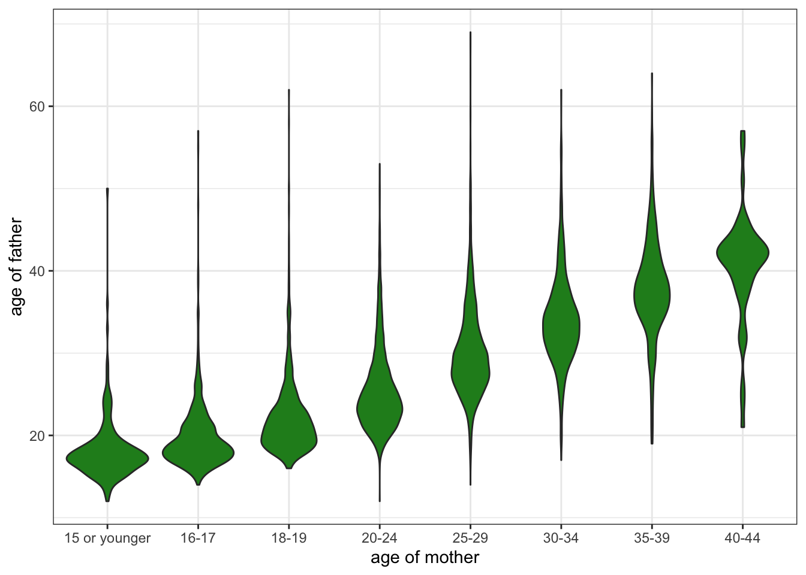

| agegroup_father | 15 or younger | 16-17 | 18-19 | 20-24 | 25-29 | 30-34 | 35-39 | 40-44 |
|---|---|---|---|---|---|---|---|---|
| 15 or younger | 31 | 13 | 0 | 2 | 1 | 0 | 0 | 0 |
| 15-17 | 78 | 159 | 46 | 5 | 5 | 1 | 0 | 0 |
| 18-19 | 60 | 225 | 309 | 122 | 17 | 4 | 2 | 0 |
| 20-24 | 27 | 190 | 625 | 1492 | 203 | 29 | 9 | 2 |
| 25-29 | 8 | 37 | 151 | 962 | 942 | 166 | 21 | 1 |
| 30-34 | 1 | 6 | 38 | 316 | 646 | 556 | 62 | 4 |
| 35-39 | 1 | 5 | 24 | 135 | 263 | 345 | 186 | 8 |
| 40-44 | 0 | 1 | 6 | 43 | 86 | 110 | 87 | 25 |
| 45-49 | 0 | 1 | 2 | 13 | 31 | 38 | 36 | 4 |
| 50-54 | 1 | 0 | 2 | 7 | 13 | 13 | 8 | 1 |
| 55-59 | 0 | 2 | 1 | 0 | 4 | 5 | 4 | 2 |
| 60-64 | 0 | 0 | 1 | 0 | 1 | 3 | 1 | 0 |
| 65-69 | 0 | 0 | 0 | 0 | 3 | 0 | 0 | 0 |
Mother/Father Age Correspondence
This brief report takes up the charge in Phil Cohen’s blog post regarding the age of fathers in cases of teenage pregnancies. A popular meme uses data from the 1988 NSFG which finds that 40% of the fathers of teenage mothers 15 years of age or younger are themselves age 20 to 29. Phil says:
So I really hope someone with the resources, skills, and training to answer this question will produce the real numbers regarding father’s age for teen births, and post them, with accompanying non-technical language, along with their code, on the Open Science Framework (or other open-access repository).
Ok, I don’t know if I qualify on any of those characteristics and I am not a regular user of the NSFG, but I was curious and this was funner than doing yard work on a Sunday. So, I downloade the 2011-13 NSFG pregnancy data. The age of the mother is provided as a constructed variable and age of father can be created from two separate questions on the age of the father for a live birth and for a pregnancy that did not end in a live birth. I dropped 447 cases (out of 9543) without a valid age on both parents. I am not weighting data.
I show the cross-tabulation of father’s and mother’s age in Table 1. Based on this table, the corresponding percent of fathers who are 20-29 in cases where mothers are 15 or younger is about 18%. That is considerably lower than the 40% from the 1988 data and indicates a substantial decline in this statistic over time.
Another way to view the data would be to look at the full age distribution of fathers for each category of the age of mothers. I do that in Figure 1 by drawing violin plots of father’s age across all the categories of mother’s age. The distribution for mothers 15 years of age or younger does not stand out as noticeably different here. If anything, the distribution exhibits less overall variation than the distribution for older women, which is not terribly surprising.

Notes on reproducing the analysis
The analytical data used here were generated from the raw NSFG data using the oranize_data.R script included here. The code for this report is provided in the analysis.qmd quarto file provided here.
Raw NSFG data is not included but can be downloaded from the NSFG home page. Users should place it in the input subdirectory using the same file name as provided in the organize_data.R script.